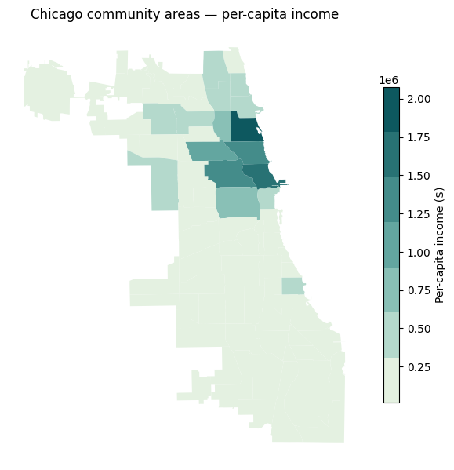
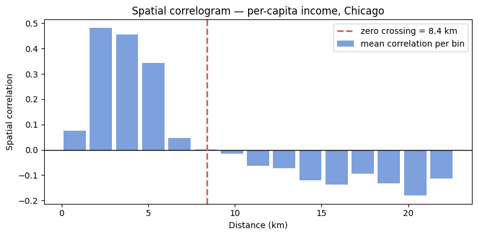
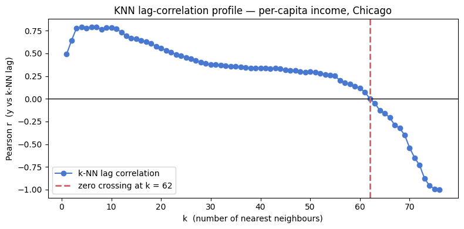
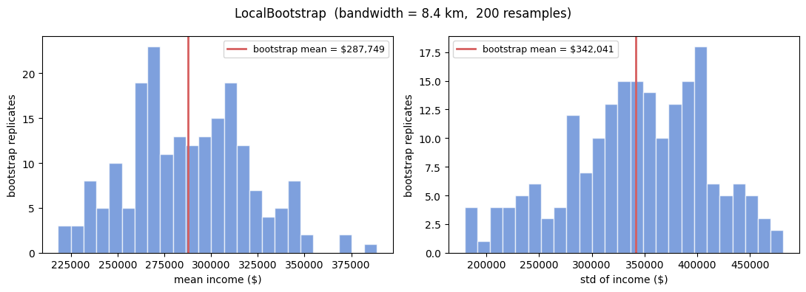
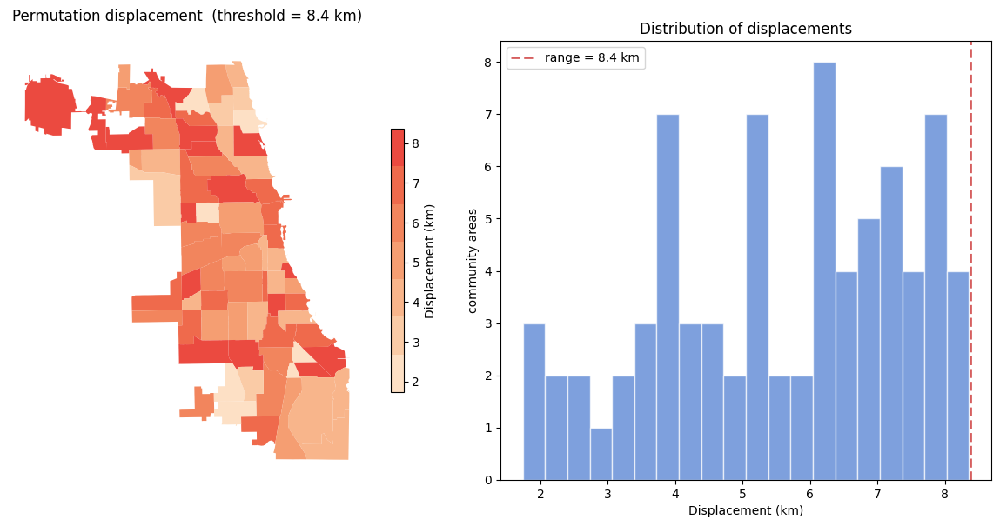
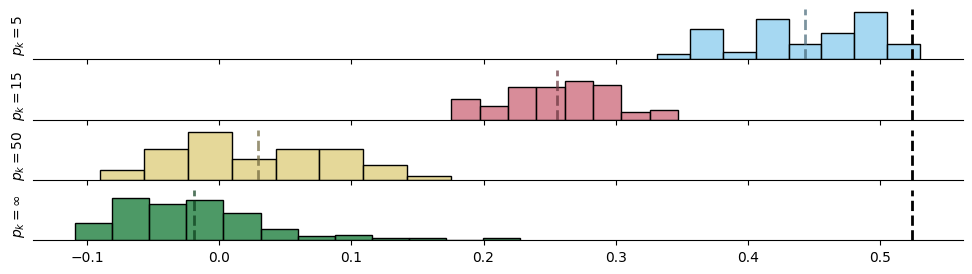
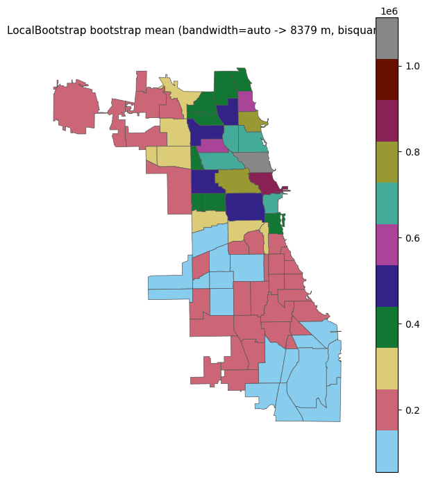
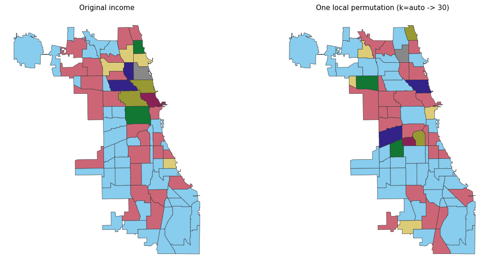

Automatic bandwidth selection with correlogram_range and knn_range¶
LocalBootstrap and LocalPermutation both require the user to supply a
bandwidth or threshold that controls how local the resampling is. Choosing
this value by hand is awkward.
geovalidate provides two helper functions that estimate the range of spatial
autocorrelation — the distance (or neighbour order) beyond which observations
are no longer correlated — and return it as a ready-to-use bandwidth.
Function |
Returns |
Use as |
|---|---|---|
|
distance (float) |
|
|
neighbour order (int) |
build a KNN graph, pass as |
import geodatasets
import geopandas
import numpy
import seaborn
import colormaps
import matplotlib.pyplot as plt
from scipy.spatial.distance import pdist
from libpysal.graph import Graph
from geovalidate import (
correlogram_range,
knn_range,
LocalBootstrap,
LocalPermutation,
)
chicago = (
geopandas.read_file(geodatasets.get_path("geoda.chicago_health"))
.to_crs("EPSG:32616")
)
chicago["income"] = chicago["PerCInc14"].fillna(chicago["PerCInc14"].median())
y = chicago["income"].to_numpy()
print(f"{len(chicago)} community areas")
print(f"income range: ${y.min():,.0f} – ${y.max():,.0f}")
77 community areas
income range: $14,905 – $2,075,859
/Users/lw17329/miniforge/envs/geovalidate/lib/python3.11/site-packages/tqdm/auto.py:21: TqdmWarning: IProgress not found. Please update jupyter and ipywidgets. See https://ipywidgets.readthedocs.io/en/stable/user_install.html
from .autonotebook import tqdm as notebook_tqdm
1 Visualising spatial autocorrelation¶
Before estimating the range, it helps to see the variable mapped — a strongly clustered pattern suggests high spatial autocorrelation and a larger range.
fig, ax = plt.subplots(figsize=(6, 7))
chicago.plot(
column="income",
cmap=colormaps.mint,
legend=True,
legend_kwds={"label": "Per-capita income ($)", "shrink": 0.6},
ax=ax,
)
ax.set_axis_off()
ax.set_title("Chicago community areas — per-capita income", pad=8)
fig.tight_layout()
plt.show()

2 Distance correlogram (correlogram_range)¶
The spatial correlogram is the average normalised cross-product $(y_i - \bar y)(y_j - \bar y)/\sigma^2$ between all pairs of observations at each distance lag. It starts near 1 for very close pairs and decays toward 0 (or below) as distance increases.
correlogram_range bins all pairwise distances, computes the mean correlation
in each bin, then interpolates the first zero crossing. That crossing is
the estimated range — the bandwidth at which nearby observations stop being
more similar than average.
# ── Re-implement the binning so we can plot it ────────────────────────────────
coords = numpy.column_stack([
chicago.geometry.centroid.x,
chicago.geometry.centroid.y,
])
y_z = (y - y.mean()) / y.std()
dists = pdist(coords)
n = len(coords)
iu = numpy.triu_indices(n, k=1)
prods = numpy.outer(y_z, y_z)[iu]
MAX_DIST = dists.max() / 2
N_BINS = 15
bins = numpy.linspace(0, MAX_DIST, N_BINS + 1)
bin_centers = 0.5 * (bins[:-1] + bins[1:])
bin_corrs = numpy.full(N_BINS, numpy.nan)
for k, (lo, hi) in enumerate(zip(bins[:-1], bins[1:])):
mask = (dists >= lo) & (dists < hi)
if mask.sum() >= 2:
bin_corrs[k] = float(prods[mask].mean())
# ── Estimate range ────────────────────────────────────────────────────────────
d_range = correlogram_range(chicago, y, random_state=0)
print(f"Estimated range: {d_range/1000:.2f} km")
# ── Plot ──────────────────────────────────────────────────────────────────────
fig, ax = plt.subplots(figsize=(8, 4))
ax.bar(bin_centers / 1000, bin_corrs, width=(MAX_DIST / N_BINS / 1000) * 0.85,
color="#4878cf", alpha=0.7, label="mean correlation per bin")
ax.axhline(0, color="black", lw=1)
ax.axvline(d_range / 1000, color="#d65f5f", lw=2, ls="--",
label=f"zero crossing = {d_range/1000:.1f} km")
ax.set_xlabel("Distance (km)")
ax.set_ylabel("Spatial correlation")
ax.set_title("Spatial correlogram — per-capita income, Chicago")
ax.legend()
fig.tight_layout()
plt.show()
Estimated range: 8.38 km

3 KNN lag correlation (knn_range)¶
Instead of binning by distance, knn_range steps through neighbour orders
$k = 1, 2, \ldots$ and at each step computes the Pearson correlation between
$y$ and its $k$-nearest-neighbour spatial lag
$\bar y_i^{(k)} = \frac{1}{k}\sum_{j \in \text{kNN}(i)} y_j$.
It returns the last $k$ for which this correlation is still positive — the number of neighbours to include before information becomes irrelevant.
from scipy.spatial import cKDTree
tree = cKDTree(coords)
MAX_K = len(chicago) - 1
_, all_idx = tree.query(coords, k=MAX_K + 1)
all_idx = all_idx[:, 1:] # drop self
ks = list(range(1, MAX_K + 1))
lag_corrs = []
for k in ks:
lag = y_z[all_idx[:, :k]].mean(axis=1)
lag_corrs.append(float(numpy.corrcoef(y_z, lag)[0, 1]))
k_range = knn_range(chicago, y, max_k=MAX_K)
if k_range == MAX_K:
print("Note: correlation did not cross zero — using max_k as upper bound.")
print(f"Estimated k range: {k_range} nearest neighbours")
fig, ax = plt.subplots(figsize=(8, 4))
ax.plot(ks, lag_corrs, "o-", color="#4878cf", ms=6, label="k-NN lag correlation")
ax.axhline(0, color="black", lw=1)
ax.axvline(k_range, color="#d65f5f", lw=2, ls="--",
label=f"zero crossing at k = {k_range}")
ax.set_xlabel("k (number of nearest neighbours)")
ax.set_ylabel("Pearson r (y vs k-NN lag)")
ax.set_title("KNN lag-correlation profile — per-capita income, Chicago")
ax.legend()
fig.tight_layout()
plt.show()
Estimated k range: 62 nearest neighbours

4 Using the range in LocalBootstrap¶
Pass d_range directly as bandwidth. The bootstrap will draw each
replacement observation from within the autocorrelation range, so the
resampled dataset has the same spatial structure as the original.
lb = LocalBootstrap(
bandwidth=d_range,
kernel="bisquare",
n_bootstraps=200,
random_state=0,
)
# Collect bootstrap distributions of the income mean and std
boot_means = []
boot_stds = []
for idx in lb.sample(chicago):
boot_means.append(chicago.loc[idx, "income"].mean())
boot_stds.append(chicago.loc[idx, "income"].std())
fig, axes = plt.subplots(1, 2, figsize=(11, 4))
for ax, vals, stat in zip(
axes,
[boot_means, boot_stds],
["mean income ($)", "std of income ($)"],
):
ax.hist(vals, bins=25, color="#4878cf", alpha=0.7, edgecolor="white")
ax.axvline(numpy.mean(vals), color="#d65f5f", lw=2,
label=f"bootstrap mean = ${numpy.mean(vals):,.0f}")
ax.set_xlabel(stat)
ax.set_ylabel("bootstrap replicates")
ax.legend(fontsize=9)
fig.suptitle(
f"LocalBootstrap (bandwidth = {d_range/1000:.1f} km, 200 resamples)",
fontsize=12,
)
fig.tight_layout()
plt.show()

5 Using the range in LocalPermutation¶
d_range is equally valid as the threshold for LocalPermutation.
Each observation is swapped only with observations within the autocorrelation
range, preserving large-scale spatial structure while shuffling local patterns.
To show the permutation is local, we plot the displacement of each community area (how far its assigned source is from its original location).
lp = LocalPermutation(
bandwidth=d_range,
n_permutations=1,
random_state=0,
)
perm_idx = next(lp.sample(chicago))
# Displacement = distance from each area to its source area
centroids = numpy.column_stack([
chicago.geometry.centroid.x,
chicago.geometry.centroid.y,
])
pos_map = {label: i for i, label in enumerate(chicago.index)}
src_pos = numpy.array([pos_map[label] for label in perm_idx])
displacements = numpy.sqrt(
((centroids - centroids[src_pos]) ** 2).sum(axis=1)
) / 1000 # km
chicago_disp = chicago.copy()
chicago_disp["displacement_km"] = displacements
fig, axes = plt.subplots(1, 2, figsize=(12, 6))
chicago_disp.plot(
column="displacement_km",
cmap=colormaps.peach,
legend=True,
legend_kwds={"label": "Displacement (km)", "shrink": 0.6},
ax=axes[0],
)
axes[0].set_axis_off()
axes[0].set_title(
f"Permutation displacement (threshold = {d_range/1000:.1f} km)"
)
axes[1].hist(displacements, bins=20, color="#4878cf",
alpha=0.7, edgecolor="white")
axes[1].axvline(d_range / 1000, color="#d65f5f", lw=2, ls="--",
label=f"range = {d_range/1000:.1f} km")
axes[1].set_xlabel("Displacement (km)")
axes[1].set_ylabel("community areas")
axes[1].set_title("Distribution of displacements")
axes[1].legend()
fig.tight_layout()
plt.show()
print(f"Max displacement: {displacements.max():.1f} km")
print(f"Mean displacement: {displacements.mean():.1f} km")
print(f"Range threshold: {d_range/1000:.1f} km")

Max displacement: 8.4 km
Mean displacement: 5.6 km
Range threshold: 8.4 km
You can see that as the permutation gets “larger”, the autocorrelation of the synthetic dataset goes down. Thus, more “realistic” random datasets are obtained with small shuffles.
from esda import Moran
# build_knn requires Point geometry
chicago_pts = chicago.copy()
chicago_pts["geometry"] = chicago.geometry.centroid
base_graph = Graph.build_knn(chicago_pts, k=5)
real_moran_knn = Moran(chicago.income, base_graph)
lps = numpy.empty((4, 99))
for i, k in enumerate((5,15,50)):
lp = LocalPermutation(
graph=Graph.build_knn(chicago_pts, k=k),
derangement=False,
n_permutations=99,
n_burn=10,
)
for p, perm_idxs in enumerate(lp.sample(chicago)):
chicago_ = chicago.copy()
chicago_["income"] = chicago.loc[perm_idxs, "income"].values
lps[i, p] = Moran(chicago_.income, w=base_graph).I
if i == 1:
chicago_pts_ = chicago_pts.sample(frac=1, replace=False)
chicago_pts_.index = chicago_pts.index
lps[-1, p] = Moran(
chicago_.income,
Graph.build_knn(chicago_pts_, k=5),
permutations=0,
).I
f,ax = plt.subplots(4,1, figsize=(12,3), sharey=True, sharex=True)
seaborn.set_palette(colormaps.safe[:4].colors)
for i,m in enumerate(lps.mean(axis=1)):
seaborn.histplot(
lps[i,:],
color=colormaps.safe[:4].colors[i],
fill=True,
ax=ax[i]
)
ax[i].axvline(
m, color=colormaps.safe[:4].colors[i]*.5, linewidth=2, linestyle='--',alpha=.7
)
ax[i].tick_params(left=False, labelleft=False)
ax[i].axvline(real_moran_knn.I, color='k', alpha=1, linewidth=2, linestyle='--', label=f'real = {real_moran_knn.I:.2f}')
ax[i].set_ylabel(['$p_k=5$', '$p_k=15$', '$p_k=50$', '$p_k=\infty$'][i])
seaborn.despine(left=True)
plt.show()

6 Automatic bandwidth selection with bandwidth='auto'¶
Rather than computing the range manually and passing it in, both
LocalBootstrap and LocalPermutation accept bandwidth='auto'
(or k='auto'). When set to 'auto', you must call fit(X, y)
first – this runs correlogram_range (for bandwidth) or knn_range
(for k) internally and stores the result as bandwidth_ or k_.
Calling sample() without fit() when using 'auto' raises a
NotFittedError.
from sklearn.exceptions import NotFittedError
from geovalidate import LocalBootstrap, LocalPermutation
# bandwidth='auto' raises NotFittedError if sample() is called without fit()
try:
list(LocalBootstrap(bandwidth='auto', n_bootstraps=1).sample(chicago))
except NotFittedError as e:
print('NotFittedError:', e)
NotFittedError: This LocalBootstrap instance has bandwidth='auto' but fit() has not been called. Call fit(X, y) first.
LocalBootstrap with bandwidth='auto'¶
fit(X, y) runs correlogram_range and stores the result as
bandwidth_. sample() then uses that bandwidth without any extra
arguments. The two steps can be chained.
lb_auto = LocalBootstrap(
bandwidth="auto",
kernel="bisquare",
n_bootstraps=200,
random_state=0,
)
lb_auto.fit(chicago, chicago.income.values)
print(f"Auto-selected bandwidth: {lb_auto.bandwidth_:.0f} m")
boot_mean = numpy.zeros(len(chicago))
for indices in lb_auto.sample(chicago):
boot_mean += chicago.income.values[chicago.index.get_indexer(indices)]
boot_mean /= lb_auto.n_bootstraps
fig, ax = plt.subplots(figsize=(6, 7))
chicago.assign(_v=boot_mean).plot(
column="_v", cmap=colormaps.safe, legend=True, ax=ax,
edgecolor="#555", linewidth=0.5,
)
ax.set_title(
f"LocalBootstrap bootstrap mean (bandwidth=auto -> {lb_auto.bandwidth_:.0f} m, bisquare)",
fontsize=11,
)
ax.axis("off")
plt.tight_layout()
plt.show()
Auto-selected bandwidth: 8379 m

LocalPermutation with k='auto'¶
k='auto' calls knn_range in fit() and stores the result as
k_. The chained form lp.fit(chicago, y).sample(chicago) is the
most concise way to use it.
lp_auto = LocalPermutation(
k="auto",
kernel="bisquare",
n_permutations=1,
random_state=0,
)
lp_auto.fit(chicago, chicago.income.values)
print(f"Auto-selected k: {lp_auto.k_}")
perm = next(lp_auto.sample(chicago))
y_perm = chicago.income.values[chicago.index.get_indexer(perm)]
fig, axes = plt.subplots(1, 2, figsize=(13, 6))
kw = dict(cmap=colormaps.safe, edgecolor="#333", linewidth=0.5, legend=False)
chicago.assign(_v=chicago.income.values).plot(column="_v", ax=axes[0], **kw)
axes[0].set_title("Original income", fontsize=11)
axes[0].axis("off")
chicago.assign(_v=y_perm).plot(column="_v", ax=axes[1], **kw)
axes[1].set_title(f"One local permutation (k=auto -> {lp_auto.k_})", fontsize=11)
axes[1].axis("off")
plt.tight_layout()
plt.show()
Auto-selected k: 30
/Users/lw17329/Dropbox/work/dev/geovalidate/src/geovalidate/cv/_local_permutation.py:148: UserWarning: knn_range: correlation did not drop to zero within max_k=30. Consider increasing max_k. Returning max_k.
k = knn_range(X, y)
